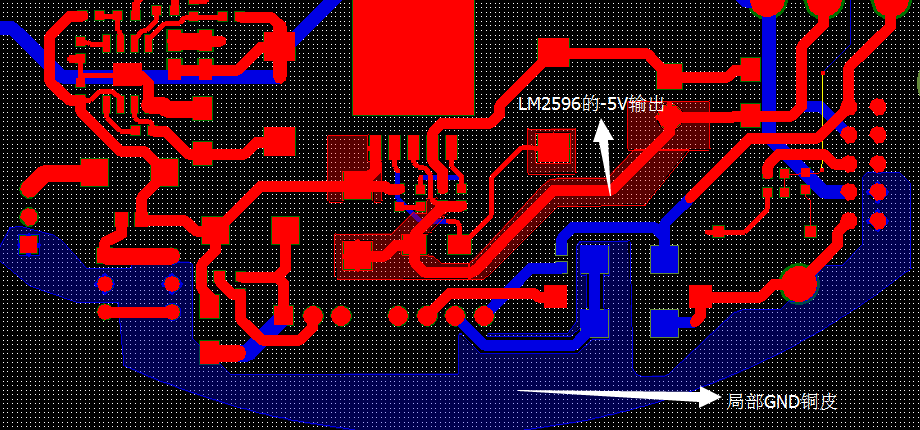
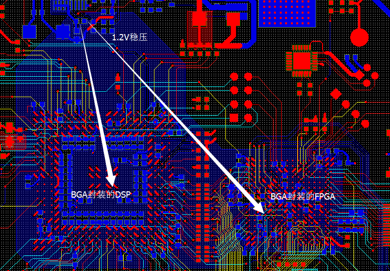
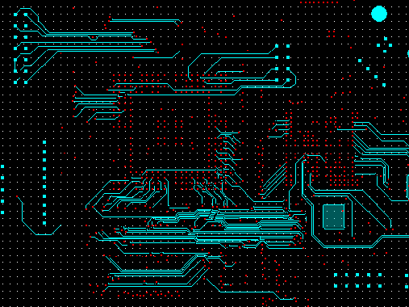
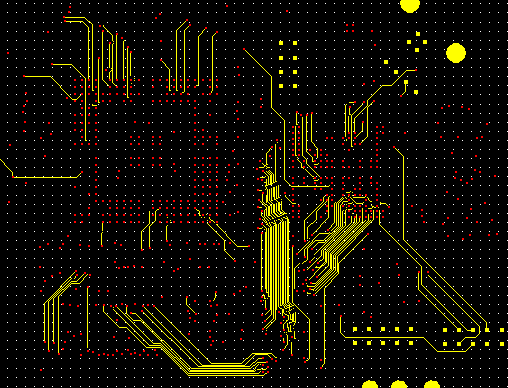
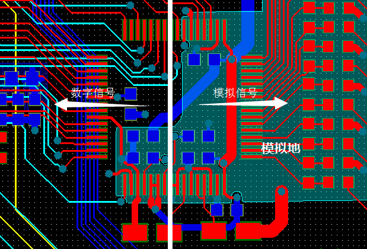
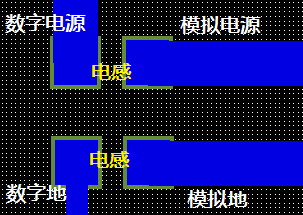
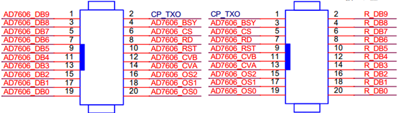
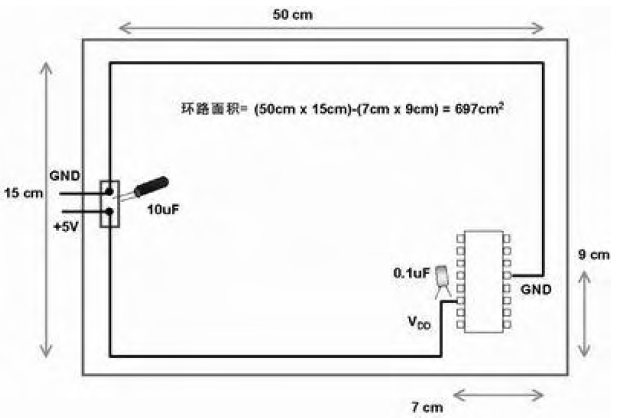
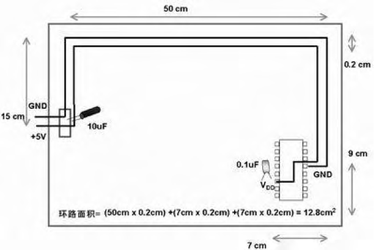
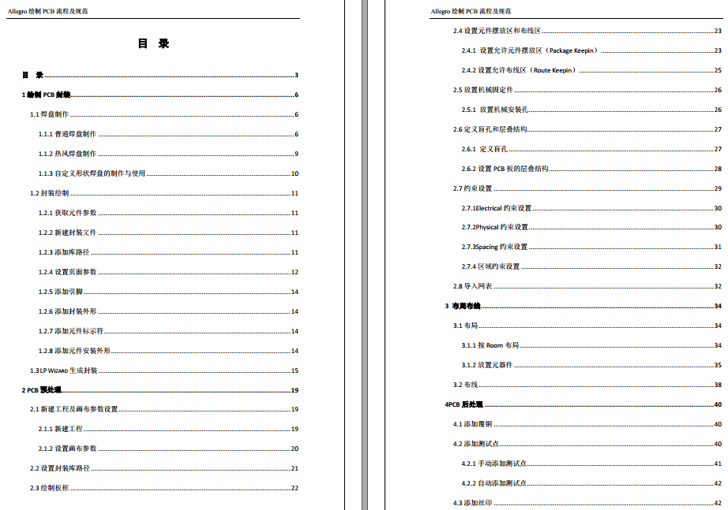

通过下面的关键词直接从网络上Google或Baidu就能很容易的找到下面的资料，这里只是以参考文献的方式做一个整理以及简单的说明。
刘雅芳，张俊辉. 抗干扰角度分析六层板的布线技巧. 天津光电通信技术有限公司技术中心.
介绍了六层板的布线技巧，非常实用，画多层板的强烈推荐。
AN1258, "Op Amp Precision Design: PCB Layout Techniques", Microchip.
我就是看着这个做运放的PCB的布局布线的，看了很多遍。
John Ardizzoni. Apractical Guide to High-Speed Printed-Cricuit-Board Layout. Analog Dialogue.
高速PCB设计的布局方法，简单看了看，老外写的东西含金量就是高。
美国国家半导体公司. 简单开关电源PCB布局指南. 2002年7月.
这是一份关于开关电源的布局布线技巧，文章内有一些理论性的解释。
科通集团Cadence Allegro基础培训. 共6期.
不得不说，对于使用Cadence绘制PCB的工程师们，科通集团的这份培训PPT可谓价值不菲啊（基于Cadence 16.5）。PPT中除了含有Allegro的使用技巧外，还有很多有价值的关于PCB设计中应该注意的一些问题（如：BGA的十字扇出、散热考虑等）。
如果设计的电路系统中包含FPGA器件，则在绘制原理图前必需使用Quartus II软件对管脚分配进行验证。（FPGA中某些特殊的管脚是不能用作普通IO的）
4层板从上到下依次为：信号平面层、地、电源、信号平面层；6层板从上到下依次为：信号平面层、地、信号内电层、信号内电层、电源、信号平面层。6层以上板（优点是：防干扰辐射），优先选择内电层走线，走不开选择平面层，禁止从地或电源层走线（原因：会分割电源层，产生寄生效应）。
多电源系统的布线：如FPGA+DSP系统做6层板，一般至少会有3.3V+1.2V+1.8V+5V。
3.3V一般是主电源，直接铺电源层，通过过孔很容易布通全局电源网络。
5V一般可能是电源输入，只需要在一小块区域内铺铜。且尽量粗（你问我该多粗——能多粗就多粗，越粗越好）

1.2V和1.8V是内核电源（如果直接采用线连的方式会在面临BGA器件时遇到很大困难），布局时尽量将1.2V与1.8V分开，并让1.2V或1.8V内相连的元件布局在紧凑的区域，使用铜皮的方式连接，如下图：

总之，因为电源网络遍布整个PCB，如果采用走线的方式会很复杂而且会绕很远，使用铺铜皮的方法是一种很好的选择！
相邻层之间走线采用交叉方式：既可减少并行导线之间的电磁干扰（高中学的哦），又方便走线（参考资料1）。如下图为某PCB中相邻两层的走线，大致是一横一竖。
 
模拟数字要隔离，怎么个隔离法？布局时将用于模拟信号的器件与数字信号的器件分开，然后从AD芯片中间一刀切！

模拟信号铺模拟地，模拟地/模拟电源与数字电源通过电感/磁珠单点连接。

基于PCB设计软件的PCB设计也可看做是一种软件开发过程，软件工程最注重“迭代开发”的思想，我觉得PCB设计中也可以引入该思想，减少PCB错误的概率。
(1) 原理图检查，尤其注意器件的电源和地（电源和地是系统的血脉，不能有丝毫疏忽）
(2) PCB封装绘制（确认原理图中的管脚是否有误）
(3) PCB封装尺寸逐一确认后，添加验证标签，添加到本次设计封装库
(4) 导入网表，边布局边调整原理图中信号顺序（布局后不能再使用OrCAD的元件自动编号功能）
(5) 手工布线（边布边检查电源地网络，前面说过：电源网络使用铺铜方式，所以少用走线）
总之，PCB设计中的指导思想就是边绘制封装布局布线边反馈修正原理图（从信号连接的正确性、信号走线的方便性考虑）。
晶振离芯片尽量近，且晶振下尽量不走线，铺地网络铜皮。多处使用的时钟使用树形时钟树方式布线。
连接器上信号的排布对布线的难易程度影响较大，因此要边布线边调整原理图上的信号(但千万不能重新对元器件编号)
多板接插件的设计：
(1) 使用排线连接：上下接口一致
(2) 直插座：上下接口镜像对称，如下图

模块连接信号的设计：
(1) 若2个模块放置在PCB同一面，如下：管教序号大接小小接大（镜像连接信号）
(2) 若2个模块放在PCB不同面，则管教序号小接小大接大
这样做能放置信号像上面的右图一样交叉。当然，上面的方法不是定则，我总是说，凡事随需而变（这个只能自己领悟），只不过在很多情况下按这种方式设计很管用罢了。
电源地回路的设计：

上图的电源地回路面积大，容易受电磁干扰

上图通过改进——电源与地线靠近走线，减小了回路面积，降低了电磁干扰（679/12.8，约54倍）。因此，电源与地尽量应该靠近走线！而信号线之间则应该尽量避免并行走线，降低信号之间的互感效应。
无私奉献，自己学习使用Cadence绘制PCB板整理出来的62页的基础教程（下载链接），重在设计流程，页页皆心血，绝对实用，绝对够分量，一张目录截图如下：
